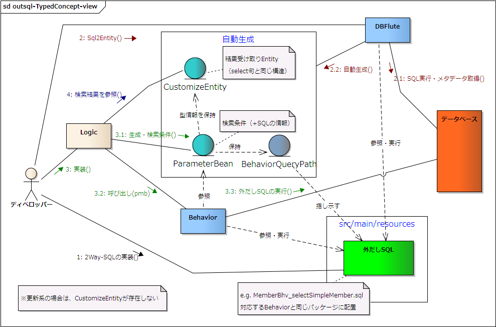

外だしSQLの実装コンセプト
外だしSQLの実装方式におけるコンセプト(背景)のわりと事務的な説明です。
外だしSQLの概念図
図 : 外だしSQLの概念図 
{kind=link}
テーブル駆動でSQLを管理
ConditionBean がそうであるように、外だしSQLも "基点テーブル" という概念を重視します。SQLファイルの名前は [Behaviorクラス名]_[SQL名(SQLを表現する任意の名前)].sql という形式にすることを推奨しています(デフォルトでは exbhv パッケージ配下)。たとえ基点テーブルが曖昧なSQLにおいても、管理上どれかのテーブルと関連付けるようにします。 これを BehaviorQuery (形式) と呼びます。
e.g. BehaviorQuery を使ったSQLファイルの管理 {src/main/resources} @Directory
foo-project
|-src/main/resources
|-com.../dbflute
|-exbhv
|-MemberBhv_selectSimpleMember.sql
SQL名は、select文なら "select..."、update文なら "update..." と、小文字始まりでSQLを prefix でわかりやすく表現することが推奨されます。この prefix を除去した残りの部分の名前を SQL業務名 と呼び、アプリ全体でユニークなアプリ固有の業務上の名前を付けます。 (ただし、先頭文字が大文字の場合は、何も除去せずSQL名そのままがSQL業務名となります)
このSQLファイルへのパスは Sql2Entity タスクで分析され、プログラム上では Behavior とSQL業務名(自動生成されたクラス、ParameterBean)だけで呼び出すことができるようになります。
e.g. テーブル駆動でSQLを呼び出す @Java
SimpleMemberPmb pmb = new SimpleMemberPmb(); // SQL業務名 + Pmb
pmb.setMemberName_PrefixSearch("S");
// 外だしSQLの実行 (MemberBhv_selectSimpleMember.sql)
// 対応する Behavior で呼び出し
List<SimpleMember> memberList
= memberBhv.outsideSql().selectList(pmb);
SQL業務名にどうのような名前を付けるか？ これは業務の特徴次第なのでフレームワークとして明確な定義はできませんが、例えば DBFlute の Example では以下のような命名をしています。(参考までに)
- 検索系
- 検索対象の業務的概要 + 基点テーブルの抽象名
- e.g. UnpaidSummaryMember (未払い購入情報付き会員) MemberBhv_selectUnpaidSummaryMember.sql
- 更新系
- 更新対象テーブルの抽象名 + 更新内容の業務的概要(受動態)
- e.g. MemberChangedToWithdrawalForcedly (会員の強制退会) MemberBhv_updateMemberChangedToWithdrawalForcedly.sql
呼び出しロジックとSQLの固定仕様の分離
DBFluteでは、呼び出しロジックとSQLの固定仕様を分離したインターフェースを提供しています。
呼び出しロジックは、例えば、結果をリスト型で受け取るのか、Entity(一件) 型で受け取るのか、ページング形式で受け取るのか、その他細かいオプション(StatementConfig など)をどのように指定するのか、こういったものを指します。これらは、一つのSQLに対し複数の実装が存在することが想定されます。 それに対しSQLの固定仕様というのは、例えば、バインドパラメータの構成、戻り値の型など、一つのSQLで基本的に一つの決まるものです。
プログラム上での呼び出しにおいて、この考え方がそのまま反映されています。
e.g. 呼び出しロジックとSQLの仕様の分離 (リスト) @Java
// リスト型での呼び出し
SimpleMemberPmb pmb = new SimpleMemberPmb(); // SQLの固定仕様
pmb.setMemberName_PrefixSearch("S"); // バインドパラメータ
// 外だしSQLの実行 (MemberBhv_selectSimpleMember.sql)
// o 結果をリスト型で受け取る -> 呼び出しロジック
// o Entityの型は SimpleMemberクラス -> SQLの固定仕様
List<SimpleMember> memberList
= memberBhv.outsideSql().selectList(pmb);
e.g. 呼び出しロジックとSQLの仕様の分離 (Entity) @Java
SimpleMemberPmb pmb = new SimpleMemberPmb(); // SQLの固定仕様
pmb.setMemberId(3); // バインドパラメータ (PK値の指定)
// 外だしSQLの実行 (MemberBhv_selectSimpleMember.sql)
// o 結果を Entity(一件) 型で受け取る -> 呼び出しロジック
// o Entityの型は SimpleMemberクラス -> SQLの固定仕様
SimpleMember member
= memberBhv.outsideSql().entityHandling().selectEntity(pmb);
ConditionBean のことを思い出すと、条件は ConditionBean で呼び出しロジックは Behavior。つまり、DBFlute 全体でこのようなポリシーになっていることがわかります。
タイプセーフ、そして、自由度考慮
"外部のSQLを呼び出す" という場合、一般に指定すべき基本的な要素は以下の三つです。
- SQLへのパス
- SQLに渡すパラメータ(バインド変数の値など)
- 戻り値 Entity の型 (検索時)
DBFluteでは、"SQLに渡すパラメータ" を格納する DTO を ParameterBean、"戻り値を受け取る型" に対応する Entity クラスを CustomizeEntity と呼びます。また、BehaviorQuery 形式のSQLファイルへのパスを BehaviorQueryPath と呼びます。
TypedParameterBean
これらはSQLの固定仕様であり、それぞれ基本的に 1:1:1 です。DBFluteでは、Sql2Entity タスクにより、これらの要素が全て関連付いた ParameterBean を自動生成します。これを "SQLに型付けされた ParameterBean" ということで TypedParameterBean (たいぷどぱらめーたびーん) と呼び、SQLの特定や戻り値 Entity の型の解決を一括した "定型呼び出し" を提供します(@since 0.9.8.0)。
e.g. TypedParameterBean による呼び出し @Java
SimpleMemberPmb pmb = new SimpleMemberPmb(); // TypedParameterBean
pmb.setMemberName_PrefixSearch("S");
// 外だしSQLの実行 (MemberBhv_selectSimpleMember.sql)
// 何を呼び出すか？ 何の Entity 型で受け取るか？ は SimpleMemberPmb が解決
List<SimpleMember> memberList
= memberBhv.outsideSql().selectList(pmb);
ParameterBean の引数は、Sql2Entity タスクで自動付与されるそれぞれの呼び出しロジックに対応したインターフェースです。例えば、selectList() なら ListHandlingPmb、selectCursor() なら CursorHandlingPmb など。パスや戻り値Entityの型の解決にも利用されるためパラメータがなくてもParameterBeanは必要です(つまり、null は許容されない)。
さらには、対応する Behavior への型付け、リストやページング、カーソルなど、そのSQLが実行可能な呼び出しロジックの型付けもされ、間違った呼び出しはコンパイル時にチェックされます。 例えば、PurchaseBhv に関連付けられている SQL を MemberBhv で呼び出すことはできません。 また、ページングを前提としたSQLに対して、単なるリスト型の検索や、カーソル検索などの間違った呼び出しをすることはできません。
TypedParameterBean として型付けされる条件は、それぞれの呼び出しロジックごとにあります。その ParameterBean がどのように型付けされたのかは、Bsクラスが実装しているインターフェースでもわかりますが、ParameterBean のクラスコメント(javadoc)にわかりやすく書かれています。Eclipse 上で ParameterBean にカーソルを合わせてふんわり出てくるクラスコメントを参考にすると良いでしょう。
ConditionBean はテーブルごとの CB、外だしSQLはSQLごとの TypedParameterBean、プロシージャはプロシージャごとの ProcedurePmb、つまり、DBFlute全体で "対応する Bean" を基点にDBアクセスが始まっていると言えます。
フリースタイル形式のメソッド (非推奨)
ほとんどの外だしSQLは、この TypedParameterBean の形式で実行されることが想定されます。 ただし、場合によっては 1:1:1 とならないような利用方法も想定されます。例えば、ParameterBean を別のSQLでも再利用したり、戻り値Entityの型に別のSQLの CustomizeEntity や独自に作ったクラスを使ったり(String, Integer などのスカラ型や DomainEntity は除く)、など。 そういった場合のために、この三つの要素をバラバラに指定するフリースタイル形式の自由度考慮のメソッドも用意されています。
ただ、1.1.x (Java8版) からは、外だしSQLのクラスをあまり再利用するべきではないだろうというポリシーから、 基本的には非推奨で、traditionalStyle()というメソッドを経由するようになっています。
e.g. フリースタイル形式の自由度考慮のメソッドによる呼び出し @Java
String path = MemberBhv.PATH_selectSimpleMember; // BehaviorQueryPath
SimpleMemberPmb pmb = new SimpleMemberPmb(); // ParameterBean
pmb.setMemberName_PrefixSearch("S");
Class<SimpleMember> entityType = SimpleMember.class
// 【1.1.x: Java8版】
// 外だしSQLの実行 (MemberBhv_selectSimpleMember.sql)
// 何を呼び出すか？ 何の Entity 型で受け取るか？ は SimpleMemberPmb が解決
List<SimpleMember> memberList
= memberBhv.outsideSql().traditionalStyle().selectList(path, pmb, entityType);
// 【1.0.x: Java6版】
// 外だしSQLの実行 (MemberBhv_selectSimpleMember.sql)
// 何を呼び出すか？ 何の Entity 型で受け取るか？ は SimpleMemberPmb が解決
List<SimpleMember> memberList
= memberBhv.outsideSql().selectList(path, pmb, entityType);
ParameterBean 引数は、単なる Object 型であり何でも受け入れます。パラメータがない場合は null も許容されます。TypedParameterBean を指定したとしても、内部ロジックで評価されるのはパラメータ部分の要素だけです。
0.9.8.0 より前はフリースタイルのみ
TypedParameterBean の概念は、DBFlute-0.9.8.0 から導入されたものであり、それより前のバージョンではフリースタイル形式のみでの実行となります。
ただ、フリースタイル形式であっても、BehaviorQuery であれば "SQLのパス" は自動生成されるため、呼び出し対象SQLの指定がタイプセーフであることに変わりはありません。 TypedParameterBean の導入で、お決まりパターン(三要素が 1:1:1 になるケース)の呼び出しに対して、お決まりのレールを整備したと言えます。(実装のすっきりさ、そして、組み合わせの間違い防止など)